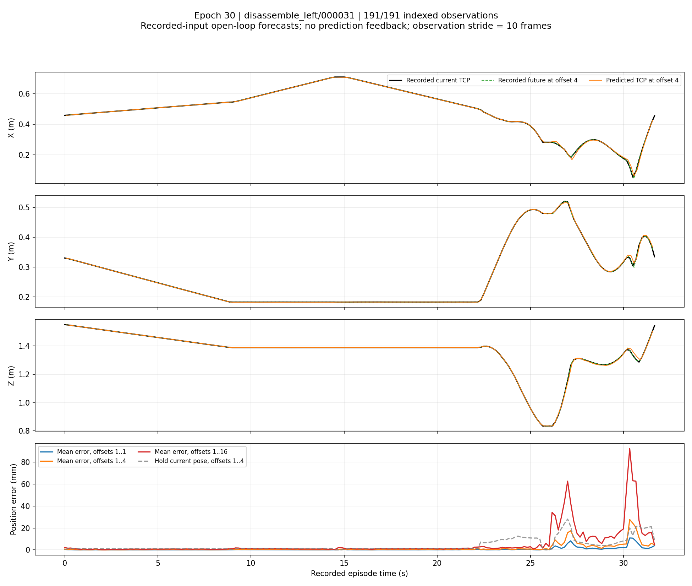
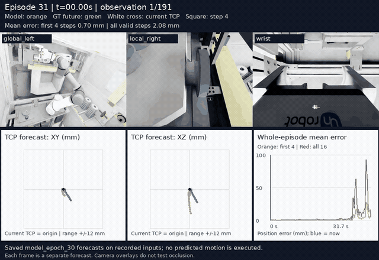

Building on previous object conditioning and OHT action-chunk prediction, this week's work focused on two needs:
Object geometry: Obtain task-relevant 3D object surfaces from original camera observations to support relation and anchor reasoning.
Motion diagnosis: Separate model prediction errors, accumulated feedback drift, and controller tracking lag during continuous chunk execution.
Summary
Integrated SAM3 object geometry: Converted predicted T/R regions into segmentation prompts, fused RGB-D object surfaces, and connected them to Relation/Anchor. Preserved Internal Slots and added Semantic-GT Oracle, same-frame visualization, and fallback diagnostics.
Completed OHT evaluation and diagnostics: Evaluated 405 cached observations, validated velocity feedforward in GT replay, completed TCP feedback diagnostics, and produced full-episode prediction visualizations.
SAM3 evaluation: Stack blocks success was 80.0% with or without SAM3, versus 84.0% with the aligned Oracle object representation. Sensitivity to input bounding-box accuracy remains a robustness concern.
Results
1. Integrated SAM3 Object Geometry into Action Prediction
Guided segmentation: Mapped coarse/refine Target/Reference regions to original camera views and generated point and box prompts for SAM3.
Geometry integration: Extracted 3D object surface points from current RGB-D, completed multi-view fusion and coordinate transforms, and connected the geometry to the existing Relation/Anchor modules.
Comparison modes: Preserved the original Internal Slots model and added a GT-prompt-driven Semantic-GT Oracle to analyze role-localization and segmentation-geometry effects.
Inspection and fallback: Added same-frame comparisons of role heatmaps, prompt points, boxes, and segmentation masks, with fallback handling and reason logs when geometry is unavailable.
Stack blocks: task success comparison
Task / Success rate (%)
Reported official model (a)
Aligned Oracle object representation (d)
Predicted object (e)
Predicted object with SAM3 (f)
Stack blocks
76.8
84.0
80.0
80.0
The aligned Oracle object representation achieved 84.0% success, compared with 80.0% for both predicted object variants. Adding SAM3 did not improve the observed success rate in this comparison; the gap to the aligned Oracle was 4.0 percentage points. Both predicted object variants were 3.2 percentage points above the reported official model (76.8%).
Issue 1: SAM3 depends on accurate input bounding boxes
The supplied example illustrates SAM3's sensitivity to bounding-box conditioning in the current pipeline. Inaccurate input boxes can alter the selected object or mask extent, affecting the extracted 3D object surface and downstream Relation/Anchor reasoning. This dependence on upstream localization introduces variability into the overall method and limits its robustness to bounding-box prediction errors.
Figure 1. Example of SAM3 sensitivity to input bounding-box conditioning.
The illustration is hosted externally and requires network access. Open the source image.
Interpretation: The example provides qualitative evidence of prompt sensitivity. The success-rate comparison shows no observed gain from SAM3, but does not by itself establish bounding-box errors as the cause. Controlled box-perturbation experiments are needed to quantify the effect.
2. Completed OHT Prediction Evaluation and Tracking Diagnostics
Completed full-episode prediction evaluation: Validated model_epoch_30.pth on Episodes 17 and 31 across all 405 cached observations, including per-step errors, horizon-wise analysis, and a stationary-baseline comparison. The model outperformed the baseline on both episodes. Errors over the first four predicted steps were:
Episode
Mean Error
P95 Error
Maximum Error
17
0.91 mm
2.57 mm
24.25 mm
31
1.58 mm
7.42 mm
44.66 mm
Implemented and validated velocity feedforward: Added target-velocity feedforward and completed the tested GT replay trajectory with reduced tracking errors.
Completed feedback diagnostics: Tested recursive TCP feedback with recorded images, identifying accumulated drift separately from independent prediction errors.
Produced full-episode visualizations: Generated trajectory/error plots and a complete Episode 31 GIF covering all 191 cached observations, with model/GT overlays and local displacement views.
These recorded-input forecasts and feedback diagnostics do not establish closed-loop task success.
Prediction evaluation output — Episode 31

Figure 2. Episode 31 prediction trajectories and error analysis. XYZ curves show step 4; the lower panel compares errors over steps 1, 1–4, and 1–16.
Full model-prediction visualization — Episode 31
Orange: model forecast; green: recorded future GT. Thick lines highlight the first four steps. The animation shows independent forecasts over recorded images, without executing predicted motion.

GIF 1. Episode 31: approximately 31.7 seconds, covering all 191 cached observations.
Use predicted T/R regions to prompt SAM3 in original camera views, then lift masked RGB-D into 3D, fuse views, and transform the points for Relation/Anchor. Compare Internal Slots, prediction-guided SAM3, and Semantic-GT Oracle. The Oracle uses GT-driven prompts; its geometry still comes from SAM3 segmentation and current RGB-D.
2. Separate Prediction and Tracking Diagnosis
Compare predictions with future GT and a stationary baseline. Use GT replay to isolate controller tracking, and recursive TCP feedback with recorded images to assess drift.
Next Plan
SAM3: Quantify sensitivity to input-box translation and scale perturbations, measuring mask quality, fallback frequency, and closed-loop task success under matched settings. Use these results to investigate the remaining 4.0-point gap to the aligned Oracle object representation.
OHT: Investigate late-trajectory errors and feedback drift, then validate closed-loop success with synchronized live observations.